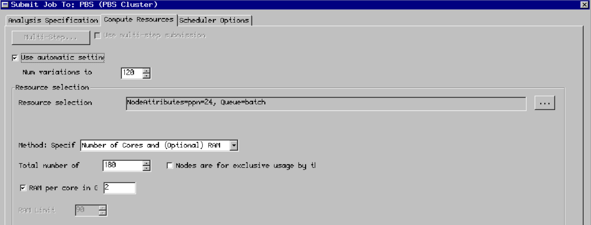

Using ansysED on the cluster
Connecting to the desktop environment
To launch ansys hfss you need to use x2go or a similar x11 forwarding program. Connect to the login node using the XFCE desktop environment setting in x2go.
Launching a job from ansysHFSS
When you have opened ansysHFSS click the submit button in the simulation tab

Next setup the simulation parameters as shown in the image and select the directory of the project that you want to simulate:

In the compute resources tab select the ammount of cores, ram and the number of variations to distribute: 
In the scheduler options tab enter a custom job submission command. For example:
-l procs=180,pmem=2gb -q 'batch@rudens.hpc.rtu.lv' -N hfss -d /home_beegfs/<b>your user name</b>/ -l walltime=5:00:00 -j oe

Now just click submit job and everything should be running!